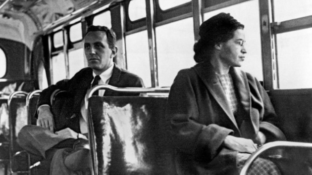
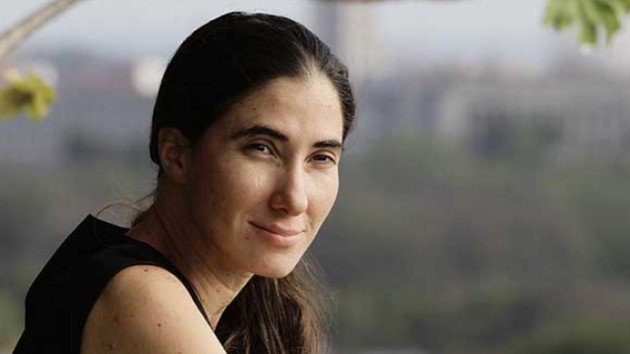
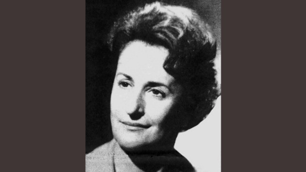
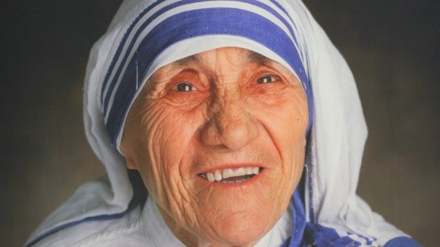

8 de Março, Dia internacional da Mulher
As principais mulheres que fizeram história pelo mundo
-
Amelia Earhart (1897 - 1939) A primeira mulher a voar sozinha sobre o Oceano Atlântico

"No mundo atual, a contínua expansãode nossas atividades cumpre um papel essencial na formulação da gestão inovadora da qual fazemos parte."
-
Joana D'arc (1412 - 1431) hefe Militar da Guerra dos 100 Anos na França
"De origem muito simples, a francesa Joana D'arc passou de camponesa analfabeta para chefe de um exército durante a Guerra dos 100 Anos, um feito e tanto para a sua curta vida. Uma das principais mártires da França, foi executada como uma herege em 1431 para, séculos mais tarde, ser canonizada pela Igreja Católica em 1920. Hoje é considerada uma santa."
-
Margaret Thatcher (1925 - 2013) A primeira mulher a ocupar o cargo de Primeira-Ministra do Reino Unido

"Conhecida como a “Dama de Ferro”, Thatcher foi a pessoa que passou mais tempo no cargo de Primeiro-Ministro durante o século XX, tendo cumprido três mandatos de 1979 a 1990. A governante foi uma grande defensora das ideologias do liberalismo clássico e teve como principal obstáculo em seu governo o grande índice de desemprego causado pela recessão."
-
Rosa Parks (1913 - 2005) Ativista símbolo do movimento dos direitos civis dos negros nos EUA
"Rosa Parks tornou-se o pivô do boicote aos ônibus de Montgomery, o qual acabou com a lei de segregação racial dos transportes públicos da cidade. Na década de 1950, muitas cidades norte-americanas mantinham esta lei, a qual dividia os assentos entre “brancos” e “pessoas de cor”, termo utilizado na época para se referir a afrodescendentes. Em 1955, Rosa Parks se negou a ceder o seu assento para um branco e foi presa. O caso repercutiu no boicote que durou 381 dias, tendo a comunidade negra se negado a usar o transporte até que a segregação fosse encerrada."
-
Yoani Sánchez (1975 - ) Jornalista cubana
"Conhecida principalmente pelos artigos que publica no seu blog Generación Y desde 2007, Yoani Sánchez luta pela liberdade de expressão em Cuba. No país onde a política é totalmente centralizada no Partido Comunista Cubano, a mídia também acaba por ser controlada. Yoani conseguiu levar informações internas para fora do país e se tornou uma voz importante para a reaproximação da Cuba aos EUA."
-
Sofia Ionescu-Ogrezeanu (1920 - 2008) A primeira neurocirurgiã da história
"Sofia Ionescu ingressou na escola de medicina de Bucareste e inicialmente estudou oftalmologia. Porém com o tempo passou a fazer voluntariado para tratar prisioneiros soviéticos e ali começou a operar cirurgias de amputação. Durante os bombardeios de 1944 em Bucareste, por falta de cirurgiões disponíveis, ela foi obrigada a realizar uma intervenção cirúrgica de emergência no cérebro de uma criança. A partir daí dedicou a vida à neurocirurgia."
-
Madre Teresa de Calcutá (1910 - 1997) Fundadora da Congregação das Missionárias da Caridade
"Albanesa naturalizada indiana, Madre Teresa de Calcutá nasceu Anjezë Gonxhe Bojaxhiu e dedicou a vida a cuidar dos mais pobres. Um dos maiores nomes quando se fala em caridade, a beata recebeu o Nobel da Paz em 1979 e foi canonizada em 2016 pelo Papa Francisco. Fundou a Congregação Missionárias da Caridade que está presente em pelo menos 139 países."